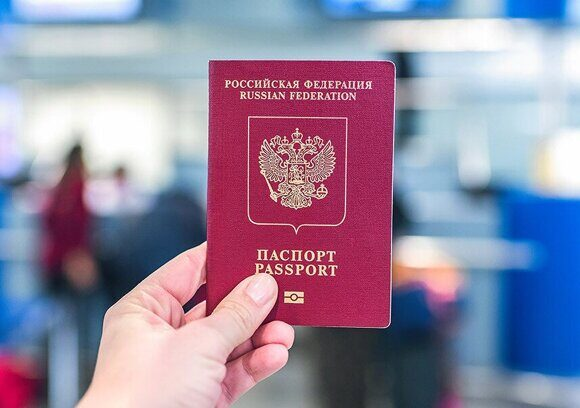

« НазадКак узнать статус заявки на получение загранпаспорта Если вы уже подали заявление на получение загранпаспорта или только планируете сделать это, то полезно будет узнать о способах готовности загранпаспорта. Иногда важно знать точную дату готовности заграничного паспорта, а иногда хочется узнать, почему процесс затягивается. В этой статье мы разберем все варианты проверки готовности паспорта, чтобы вы могли выбрать наиболее удобный для себя. Основные способы проверки готовности загранпаспортаСуществует несколько способов узнать, где находится ваш загранпаспорт, и какой статус у вашего заявления. Чтобы вам было удобнее ориентироваться, ниже перечислены основные методы:
Каждый из этих способов имеет свои преимущества и может быть использован как по отдельности, так и в сочетании, чтобы получить полную информацию о готовности загранпаспорта. Онлайн-сервисы для проверки статусаОдин из самых удобных вариантов – проверка статуса онлайн. Для большинства граждан доступно несколько платформ, позволяющих отслеживать прогресс оформления паспорта. Давайте обсудим каждую из них. Проверка через официальный сайт ГУВМ МВДЕсли вы подали заявление лично или через МФЦ, можно зайти на сайт ГУВМ МВД и проверить статус оформления паспорта. На сайте есть раздел, посвященный проверке готовности загранпаспорта. Что нужно сделать:
Преимущества метода:
Нюансы:
Проверка через портал ГосуслугДля тех, кто уже зарегистрирован на портале Госуслуг, этот способ является простым и интуитивным инструментом для контроля готовности паспорта. Как проверить:
Особенности:
Преимущества:
Мобильные приложенияГосуслуги предоставляют возможность проверки статуса загранпаспорта через мобильное приложение. Если вам удобнее получать уведомления и проверять статус через смартфон, то обращайте внимание на приложения, разработанные государственными службами. Что нужно знать:
Преимущества приложения:
Телефонные консультацииЕсли у вас нет доступа к интернету или вы предпочитаете живое общение, можно получить информацию по телефону. Этот метод актуален для тех, кто хочет задать уточняющие вопросы или получить полную информацию от оператора. Как проверить:
Преимущества:
Советы:
Личный визит в отделение УВМ МВДЛичный визит по-прежнему является надежным способом узнать о готовности паспорта. Это особенно актуально, если сроки оформления паспорта затягиваются или вам необходима разъясняющая информация. Как действует личный визит:
Преимущества личного визита:
Плюсы и минусы:
Дополнительные советы и моменты, на которые стоит обратить вниманиеЧтобы процесс оказался максимально прозрачным и понятным, предлагаем вам несколько дополнительных рекомендаций: Начинайте процесс оформления заранее. Знание актуального статуса поможет избежать лишнего стресса, если цифры будут сбиваться в последний момент. Если вы видите, что статус застопорился на одном этапе, не паникуйте. Возможно, система обновится, или потребуется уточнение по телефону. При выборе способа проверки учитывайте собственные возможности. Например, если вы часто пользуетесь интернетом и мобильными приложениями, онлайн-сервисы – идеальный выбор. Важно отметить, что статус может изменяться с некоторой задержкой. Рекомендуется проверять его не чаще одного раза в день, чтобы не создавать дополнительное напряжение. Если возникают вопросы, которые не отражены онлайн, не стесняйтесь лично обратиться за консультацией. Это позволит оперативно разрешить любые недоразумения. Часто задаваемые вопросыНиже приведены ответы на наиболее часто встречающиеся вопросы, связанные с проверкой готовности загранпаспорта: Что делать, если информация на сайте не обновляется длительное время? – Попробуйте проверить через личный кабинет на Госуслугах или позвоните в миграционную службу. Иногда технические задержки могут влиять на отображение данных. Как часто обновляется информация о статусе паспорта? – Обычно обновление происходит в режиме онлайн с задержкой до нескольких часов. Если срок оформления превышает ожидаемый, перепроверьте данные по телефону. Можно ли заранее узнать о причинах задержки в оформлении паспорта? – Да, при личном визите или телефонном звонке сотрудники могут предоставить подробную информацию о причинах задержки и дальнейших действиях. Как мне узнать, нужно ли предоставлять дополнительные документы? – Статус «Принято» или «Оформление» часто сопровождается уведомлениями о необходимости доработок. Если неясно, уточните это у оператора или в личном кабинете. Что делать, если мой паспорт оформляется через посредническую фирму и информация не поступает? – Свяжитесь напрямую с представителем фирмы, чтобы уточнить актуальный статус. Также можно перепроверить данные через официальный сайт миграционной службы. Различается ли процесс проверки между биометрическим и обычным загранпаспортом? – Основные этапы и способы проверки схожи, однако для биометрического паспорта требуется ввод серии и номера внутреннего документа, а для обычного – дополнительные данные. Как узнать, готов ли документ, если я подавал заявление через МФЦ? – Информацию вы можете получить как через интернет, так и по телефону, обратившись в то отделение, где подавали заявление. В Личном кабинете на Госуслугах часто отражаются все обновления. Стоит ли тревожиться, если статус меняется не так быстро? – Некоторые этапы оформления могут занимать больше времени. Если прошло значительное время, лучше связаться с отделением, чтобы уточнить ситуацию. Могу ли я самостоятельно завершить оформление, если статус застрял? – Обычно требуется дополнительное разъяснение со стороны миграционной службы, поэтому лучше обращаться за консультацией, чтобы избежать ошибок. Какие документы необходимо иметь под рукой для проверки по телефону или лично? – Обычно это паспорт, данные, указанные в заявлении, и, если есть, номер заявки. Это позволит сотруднику быстрее найти информацию о вашем обращении. ЗаключениеЗная все этапы оформления, вы сможете оперативно узнать, на каком этапе находится ваш документ, и принять необходимые меры для ускорения процесса или устранения причин задержки. Основные рекомендации, которые помогут вам:
Проверка готовности загранпаспорта – важный этап, позволяющий чувствовать уверенность в том, что всё идет по плану. Независимо от того, предпочитаете ли вы цифровые технологии или живое общение, выберите способ, соответствующий вашим ожиданиям и возможностям. Это поможет вам оперативно реагировать на изменения и быть готовыми к любым нюансам оформления. Оперативное оформление загранпаспорта в центре МосквыСрочное оформление загранпаспорта еще никогда не было таким простым! Если у вас запланирована поездка и времени катастрофически не хватает, Паспортно-визовый центр «Север» готов помочь вам в кратчайшие сроки. Мы работаем более 25 лет, и наша команда профессионалов знает все тонкости оформления документов. Мы предлагаем оперативное решение для тех, кто ценит время и хочет избежать лишних бюрократических сложностей. Наши преимущества:
Наша задача – сделать ваш путь к заграничным поездкам легким и приятным. Позвоните по номеру +7 (925) 585-41-95, и мы организуем все процессы: от консультации до получения паспорта. Доверьтесь профессионалам, которые оперативно решат любую проблему и помогут получить желаемый документ в кратчайшие сроки.
|
Комментарии
Комментариев пока нет